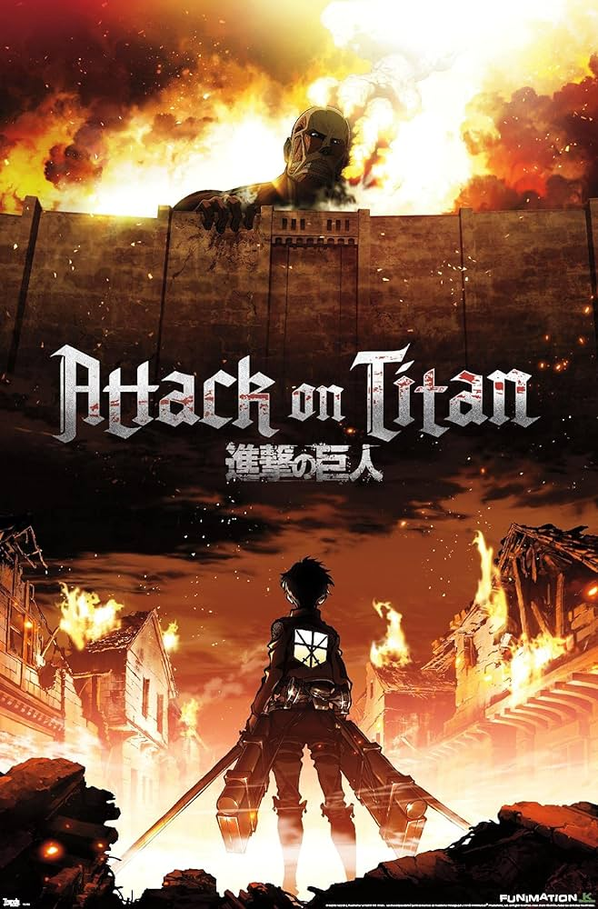

ATTACK ON TITAN

Plot
When man-eating Titans first appeared 100 years ago, humans found safety behind massive walls that stopped the giants in their tracks.
But the safety they have had for so long is threatened when a colossal Titan smashes through the barriers, causing a flood of the
giants into what had been the humans' safe zone. During the carnage that follows, soldier Eren Jaeger sees one of the creatures
devour his mother, which leads him to vow that he will kill every Titan. He enlists some friends who survived to help him,
and that group is humanity's last hope for avoiding extinction at the hands of the monsters.
Reviews